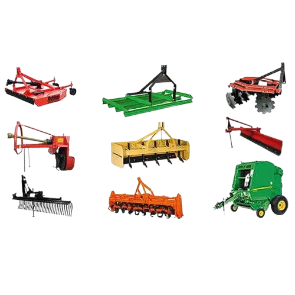
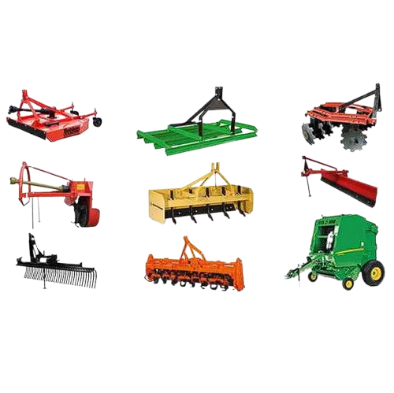

Cobertura para maquinarias agricolas
de todo tipo


 

En el mundo de la agricultura, la maquinaria es una inversión esencial para el éxito de tu negocio. Sin embargo, estos equipos costosos son vulnerables a daños, accidentes y robos.
Es por eso que contar con un seguro adecuado es crucial para proteger tu inversión y garantizar la continuidad de tus operaciones.
¿Por qué es importante un seguro para maquinaria agrícola?
- ✅Protección financiera: Un seguro te brinda tranquilidad al saber que estás protegido ante imprevistos como incendios, accidentes, robo o daños causados por fenómenos naturales.
- ✅Continuidad de operaciones: En caso de un siniestro, el seguro te permite reparar o reemplazar tu maquinaria rápidamente, minimizando el tiempo de inactividad y evitando pérdidas económicas.
- ✅Cumplimiento de obligaciones: Algunos contratos de arrendamiento o financiamiento requieren que tengas un seguro para tu maquinaria.
- ✅Tranquilidad: Un seguro te permite concentrarte en tu trabajo, sabiendo que estás protegido ante cualquier eventualidad.
¿Qué coberturas ofrece un seguro para maquinaria agrícola?
- ✅Incendio: Protege tu maquinaria contra daños causados por fuego, humo o explosión.
- ✅Robo: Cubre la pérdida de tu maquinaria por robo o intento de robo.
- ✅Daños por colisión: Protege tu maquinaria contra daños causados por accidentes de tránsito o colisiones con otros vehículos.
- ✅Daños por granizo: Cubre los daños causados por granizo a tu maquinaria.
- ✅Responsabilidad civil: Protege tu negocio contra reclamos de terceros por daños causados por tu maquinaria.
¿Cómo elegir el seguro adecuado para tu maquinaria agrícola?
Al elegir un seguro para tu maquinaria agrícola, es importante considerar los siguientes factores:
- ✅Tipo de maquinaria: Diferentes tipos de maquinaria tienen diferentes riesgos y necesidades de cobertura.
- ✅Valor de la maquinaria: El valor de tu maquinaria determinará la cantidad de cobertura que necesitas.
- ✅Uso de la maquinaria: La frecuencia y la intensidad con la que utilizas tu maquinaria afectarán el riesgo y la prima del seguro.
- ✅Ubicación de la maquinaria: El lugar donde guardas tu maquinaria puede influir en el riesgo de robo o daños.
- ✅Presupuesto: Es importante comparar las opciones de diferentes compañías de seguros para encontrar la cobertura que mejor se adapte a tus necesidades y presupuesto.
Protege tu inversión con un seguro confiable.
📞Contáctanos hoy mismo y obtene una cotización personalizada.
Volver al inicio